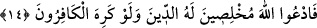

13. Size âyetlerini gösteren, sizin için gökten rızık indiren O’dur. Allah’a
yönelenden başkası ibret almaz.
“Size” dînî ihtiyaçlarınızı gözeterek gerek nefislerinizde gerekse dış dünyada
“ayetlerini” yâni kudretinin göstergelerini, tekliğinin şâhidlerini “gösteren…” Burada
insanoğlunun “varlıkların hakikati”ni kendi basîretiyle göremeyeceğine, bunun ancak
Cenab-ı Hakk’’ın göstermesi ile mümkün olabileceğine dâir bir işâret vardır.
Ve bedenî ihtiyaçlarınızı gözeterek “size gökten rızık” yâni rızık sebebi olan yağmuru
“indiren O’dur.” Âyet-i kerîmede rızık ve âyetler birlikte zikredilmiştir. Çünkü bedenî
hayat açısından rızıklar hangi konumdaysa, dînî hayat açısından Hakk’ın âyetleri aynı
konumdadır.
Bu eşsiz âyetlerden, “Allah’a yönelen” inkârı bırakıp O’na dönen kimseler ibret alır;
yâni Allah’ın, yarattığı çeşit çeşit varlığa tevdî ettiği sadece Allah’a kulluk edilmesini
gerektiren eksiksiz kudret tezâhürleri hakkında ve herkese verilen gizli-açık nimetler
üzerinde tefekkür edenden “başkası” öğüt ve “ibret almaz.” Onların gerektirdiği
şekilde ancak bu vasıftaki kişiler davranır. Böyle olmayanlar ise -ki hepsi birer
inatçıdır- düşünüp öğüt almaktan çok çok uzaktırlar! İşte durum böyle olduğuna, yâni
düşünüp ibret almak ancak içtenlikle Allah’a yönelenlere mahsûs olduğuna göre:
14. Haydi, kâfirlerin hoşuna gitmese de Allah’a, Allah için dindâr ve ihlâslı olarak
duâ edin!
“Ey mü’minler! İnkârcılar” bunu “istemese” ve şirkten tamamen uzaklaşmanız onları
son derece öfkelendirse de, Allah’a îman edip O’na yönelmiş olmanızın gereği olarak
dininizi ve tâatlerinizi gerek şirkten gerekse O’ndan başkasına iltifat etmekten kurtarıp
yalnız “Allah’a has kılarak O’na yalvarın”, sadece O’na kulluk edin.
Kâşifî der ki: Kâfirler sizin O’na olan îmanınızı kerih görürlerse de. Çünkü onlar
îman nimetini inkâr ederler, siz ise o nimete karşı şükredicisiniz. Bu durumda sizin
aranızda münâferet vardır. Sizin söz ve amelleriniz onlar tarafından beğenilip sevilmez.
Onların fiil ve sözleri de sizin katınızda sevimsizdir.
[Sa’dî, Gülistân’da şöyle der:]
Sofunun biri rind meclisindeydi; Belhli bir dilber şöyle dedi:
Bizden memnûn değilsin; somurtma. Sen de aramızda acısın.